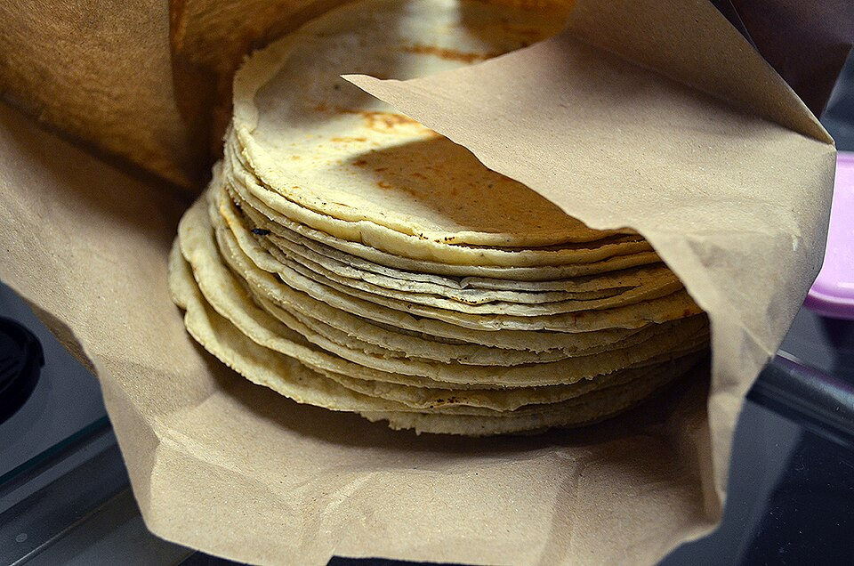
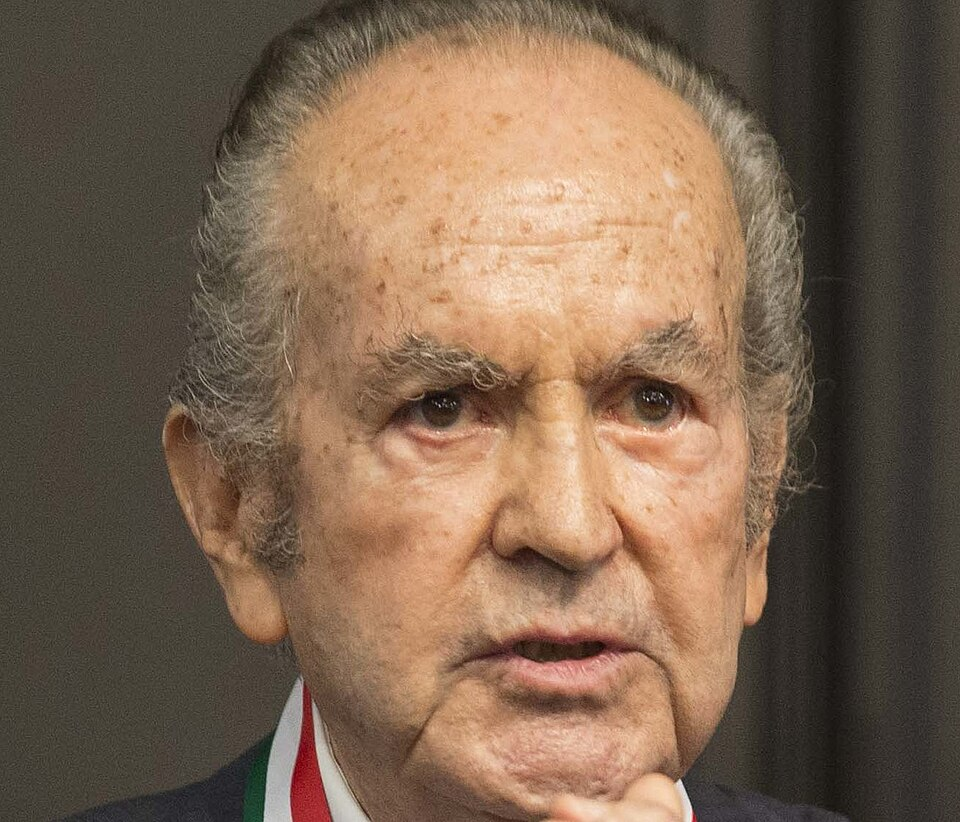

Actividad 19 · Empresarios mexicanos
Juan Diego Olvera Medina · LATI, 9.º semestre · Cuadro comparativo de empresarios mexicanos


| Roberto González Barrera (1930-2012) | Alberto Baillères González (1931-2022) | |
|---|---|---|
| Origen | Nació en Cerralvo, Nuevo León. Desde joven trabajó en el molino de nixtamal de su familia. | Hijo de Raúl Baillères, banquero y minero que fundó el grupo y el ITAM. |
| Cómo empezó | En 1949 fundó con su padre un molino que producía harina de maíz nixtamalizado: el origen de Gruma. | Heredó y dirigió el grupo familiar a partir de los años sesenta. |
| Empresas | Gruma (Maseca, Mission), principal productor de harina de maíz y tortillas del mundo; Banorte, que compró en 1992. | Grupo BAL: Peñoles y Fresnillo (minería), El Palacio de Hierro, GNP Seguros y Profuturo. |
| Innovación | Industrializó la tortilla: con la harina de maíz cualquiera puede hacer tortillas sin moler nixtamal. | Diversificó de la minería a comercio, seguros y finanzas. |
| Alcance | Llevó la tortilla mexicana a Estados Unidos, Europa, Asia y Oceanía. | Fresnillo se volvió uno de los mayores productores de plata del mundo. |
| Legado social | Llevó a Banorte a ser uno de los bancos mexicanos más grandes, con capital nacional. | Presidió y financió el ITAM, una de las universidades privadas más influyentes del país. |
| Críticas | Cercanía con el poder político y control casi total del mercado de harina de maíz. | Impacto ambiental y social de la minería en las comunidades donde opera. |
Los dos construyeron grupos enormes, pero creo que construir todo desde el campo tiene más mérito. González Barrera empezó con un molino en un pueblo de Nuevo León y convirtió algo tan cotidiano como la tortilla en un negocio global; cada paso lo tuvo que ganar. Baillères fue un administrador muy capaz y supo diversificar, pero partió de un imperio que ya existía y de un apellido que abría puertas.
Eso no quita que los dos tengan sombras: el control del mercado del maíz en un caso y el costo ambiental de la minería en el otro. Admirar el camino no es lo mismo que justificar todo lo que hicieron en él.
Gruma, historia corporativa. Grupo BAL, perfil corporativo. Semblanzas públicas de Roberto González Barrera y Alberto Baillères.